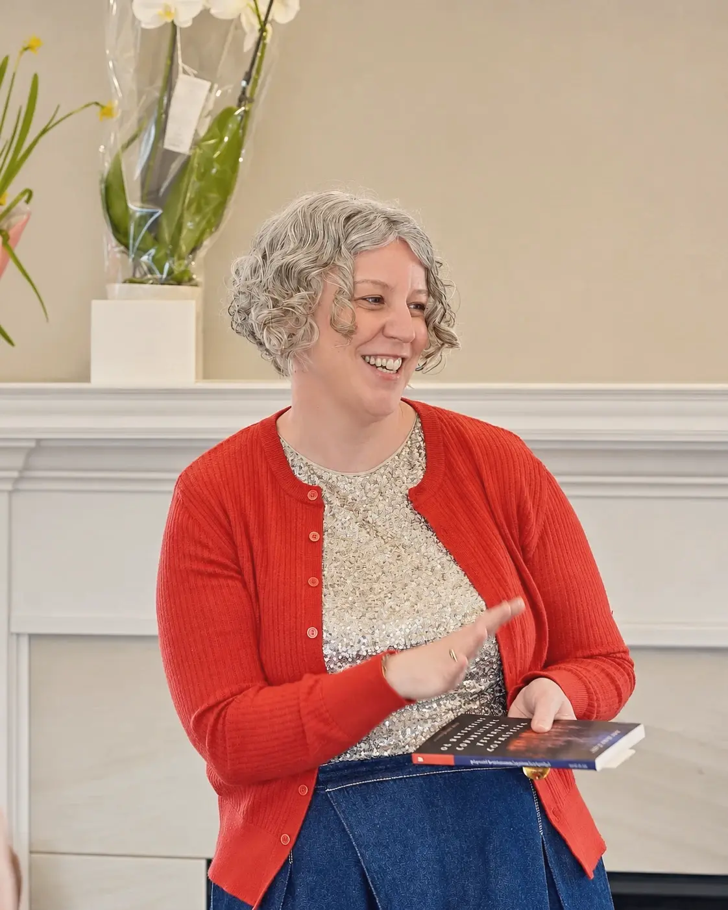
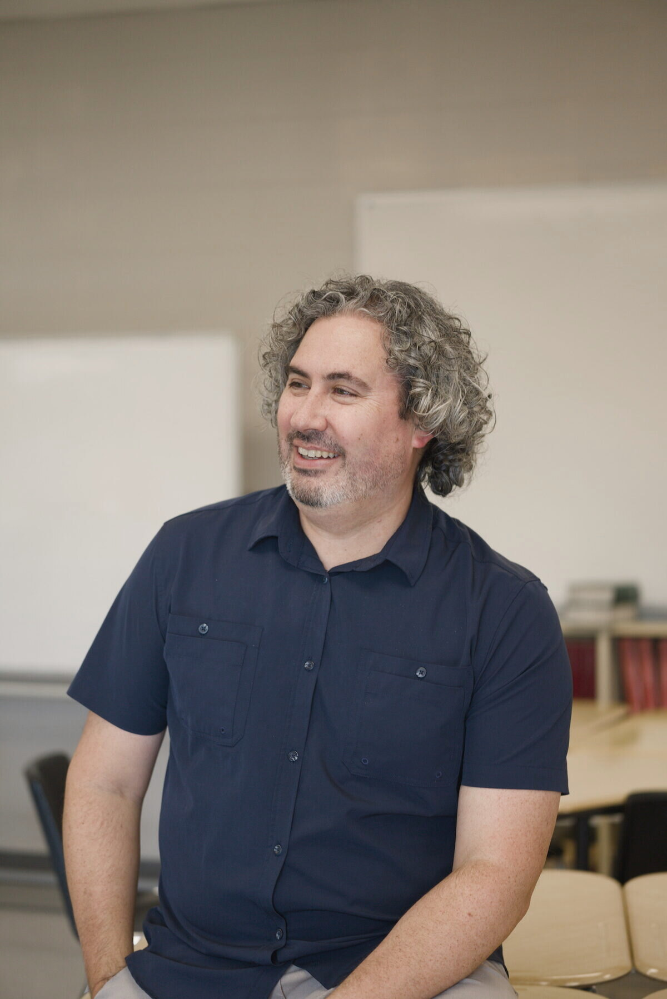
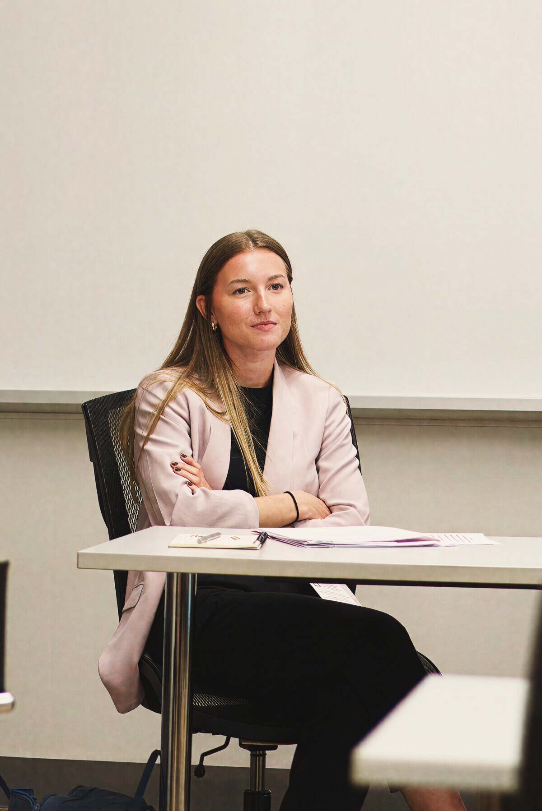
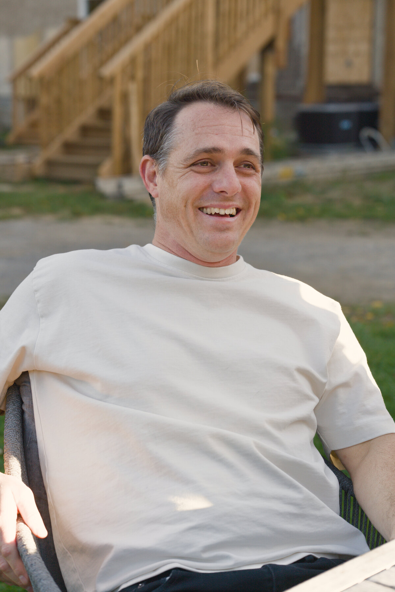
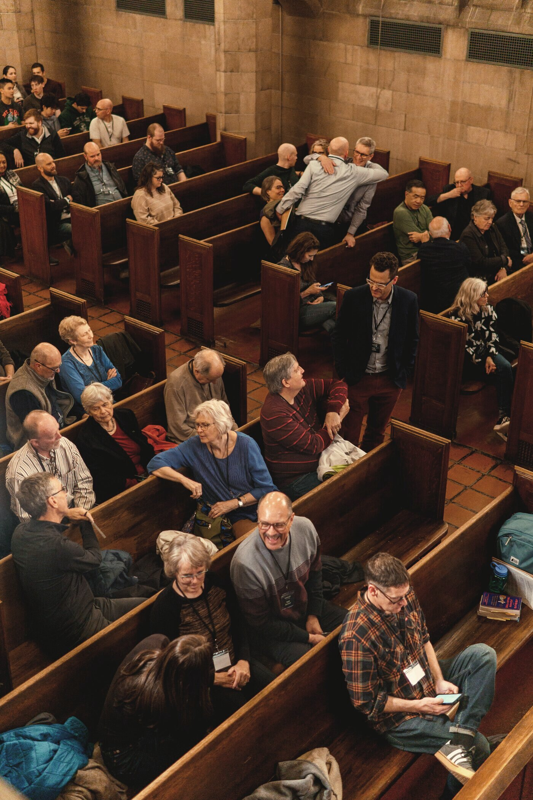

ii. Our Students3
ii.Our Students
Two Junior Members and one graduate on what changed for them this year.
David Grills
I think teachers should be the first learners in their classroom.
Figures cover the academic year September 2025 to August 2026 unless marked otherwise. Download the PDF.

Beth Green on a year of community, and the many people it gives us reason to thank.
Dear friends of ICS, I became President on July 1, which means I’m summarizing a year that I mostly observed from the sidelines as an enthusiastic supporter of the ICS. I’ve done what newcomers should: listened, read back through a year of newsletters, and asked people what mattered. What I heard, again and again, was a story about a community whose members kept showing up for one another.
The 25-26 academic year began with the Fall Retreat at Crieff Hills, and a week later the community gathered again to give thanks for the life of Calvin Seerveld, a teacher and colleague many of you knew and loved. It ended at Convocation in May, where four graduates received their degrees and John A. Olthuis was awarded an honorary Doctor of Letters. In between came seminars, conferences, and new books, and the quieter work that holds a school together. But the heart of this report is our Junior Members. In the pages that follow you’ll meet two current students and an alum, and see what study at ICS has meant for them and the communities they serve.
All of this happened under the leadership of Ron Kuipers, and I want to thank him. He led ICS steadily and hopefully, and gave his time generously as a teacher and writer, as well as President. In his monthly reflections he kept returning to a hope that costs something, ending in June with the conviction that “wherever a light shines in the darkness, the darkness will not overcome it.” He’s handed on the baton with gratitude and hope, and I receive it in the same spirit, and I’m glad Ron remains by my side, as a colleague.
A report like this tells the bright part of the story. Any year in a community also holds illness, loss, and work that goes unseen, and gratitude doesn’t pretend otherwise. When Paul urged an anxious church in Thessalonica to encourage one another, to rejoice, pray, and give thanks, he wasn’t selling positive thinking. He was describing a community held together by the grace of God. That’s the community I’ve found at ICS.
You’re part of it. Your gifts, prayers, and friendship sustain the seminar where a Junior Member’s question becomes a research project, and the Free to be Faithful course that brings ICS scholarship to people who will likely never find themselves in one of our philosophy seminars. Finally, you’ll find an account of our finances at the back of this report, because you deserve to see how we stewarded the resources you entrusted to us.
Thank you.
Beth GreenPresident, Institute for Christian Studies

Two Junior Members and one graduate on what changed for them this year.
I think teachers should be the first learners in their classroom.
Early in his Grade 10 Old Testament course, David Grills asks his students how many sons Abraham had. No one says eight. Most have studied Genesis since kindergarten and, he says, arrive feeling: “I know this already.” Being confidently wrong is where his teaching starts.
David has taught Bible at Hamilton District Christian High since 2013. When Gideon Strauss invited him into a new master’s program for working educators, the MA-EL, he said yes. “I just wanted to be a better teacher,” he says.
What he took back to class was language “for things I was doing intuitively.” A course on reflective practice taught him to keep adjusting and to invite feedback, even a quick fist-to-five check from students. His final project, a podcast, asked how to rekindle wonder in Bible class.
Now he’s back as a PhD Junior Member, still teaching full time. “The master’s was for my students,” he says. “The PhD is for me.” His research now turns to a phenomenology of religious experience, guided by Paul Ricoeur. Time is the hard part (“I had to use every moment”), yet the work keeps coming home: a seminar presentation on Teresa of Ávila is already reshaping his New Testament class.
This fall David began teaching Reading the Bible Well for ICS, to teachers who are working to improve their craft, some of them years into their careers. “They have the same aha moments as my 15-year-olds,” he says. “Here they are expressing, ‘I didn’t know this about the Bible.’” He is learning along with both sets of students, trying to uncover just a little more of the mystery of God through the study of Scripture.

I have found that doing philosophy at ICS has shaped how I think far more than just what I ought to think.
Ask Alayna Erickson what changed for her at ICS and she doesn’t point to a set of conclusions. “I have found that doing philosophy at ICS has shaped how I think far more than just what I ought to think,” she says. “It’s a bit messier that way, but it is something I have been learning to embrace and even love.”
She arrived without a plan. Her undergraduate philosophy professor, Dr. Matt Bonzo, an ICS alumnus, encouraged her to keep going, and she had “an inkling that I wasn’t quite ready to be done with the work I had started.” She loved what she was reading and writing, and the people around her saw something worth pursuing.
At ICS, that work stopped feeling like something extra added on top of her life. She came to see philosophy as a vocation more than a career, something that “integrally shapes how I think and how I think about thinking itself.”
The change began early, in a course on Reformational philosophy. Herman Dooyeweerd and Dirk Vollenhoven didn’t end up at the centre of her studies, but the course shaped how she goes about doing philosophy as a Christian. It had her asking what makes a philosophy Christian at all, and how her deepest beliefs about God, the world, and her place within it shape the rest of her pursuits.
Thinking this way also meant thinking out loud before she was sure. In-person conversation comes easily to Alayna, but in online seminars she hesitated to offer an idea that wasn’t yet fully formed. She had to trust that an unfinished thought was worth sharing, and to step into conversations where she felt out of her depth. That, too, was learning how to think rather than what. “It took a while,” she says of finding her voice, “but I think I slowly started to find it.”

It’s okay not to be certain, and it’s okay not to be right.
Partway through a semester with Bob Sweetman, Caleb Ratzlaff felt the class must be lost. By the end he saw that Bob had walked this path before and had been guiding them the whole time. “I was discovering something for myself,” Caleb says, “even though Bob had been there already.”
He had come from McMaster Divinity College, where classmates were focused on career preparation and he had questions that he didn’t feel free to ask. A course on Hannah Arendt with Allyson Carr showed him that at ICS he could.
With Nik Ansell, Bob Sweetman, and Shannon Hoff, he came to see that not being certain is not a deficit but a feature of the human condition, one that leaves room for love, freedom, and relationship. Shannon, his advisor, sat down with him to work through the basics of writing, and fellow students helped him sharpen his arguments.
After ICS he pastored Westview Christian Fellowship in St. Catharines for seven years and took the classroom into the sanctuary. His sermons became teaching time that invited feedback. During a series on Christ’s grandmothers—women who, he says, took back ownership of their stories after abuse—a woman in the congregation told him, “I didn’t realize that Scripture contained my story.”
Then he ran for city council in St. Catharines, where the same question applies: who has power, and who is missing? He calls it “the political question.” On council he goes looking for those voices, canvassing apartment buildings and listening to tenants. Re-elected this fall, he’s begun working with the Golden Horseshoe Co-operative Housing Federation, which is building 492 co-op homes in the city.
Of the people he studied beside at ICS, he says: “My approach to Scripture would definitely have been a lot different without them, and now, my approach to politics and city council.”
Who studied at ICS this year, and in which programs.

The questions we study belong to the whole church. This year our lifelong learning programs took them well beyond St. George Street.
Short courses for pastors, teachers, and curious adults.
The Summer Big Read drew 1,277 registrants.
Reenchanting the World and Courageous Faith in a Time of Fear.
Essays on faith, scholarship, and public life.
Everything in this report was made possible by people who chose to stand with ICS. To our donors, our partner churches and foundations, our volunteers, our Board of Trustees, and our Senior Members and staff: thank you.
Your gifts funded bursaries that let students say yes. Your prayers and encouragement sustained us through a year of change. Your presence at lectures, in reading groups, and in our inboxes reminded us why this work matters.
Institute for Christian Studies
59 St. George Street, Toronto, Ontario
icscanada.edu · 1-416-979-2331
| Donation income | $745,318 | |
|---|---|---|
| Donations | 577,514 | |
| Church contributions | 36,794 | |
| Bequests | 131,010 | |
| Tuition and fees | 253,162 | |
| Investment income | 114,329 | |
| Okia Fund and other fund transfers | 56,476 | |
| Other income | 86,107 | |
| Total revenues | $1,255,392 |
| Salaries, benefits, and allowances | $997,880 | |
|---|---|---|
| Academic and research | 138,437 | |
| Rent | 51,200 | |
| Office supplies and overhead | 60,226 | |
| Consulting and professional fees | 98,780 | |
| Advertising and promotion | 12,443 | |
| Conferences and events | 18,049 | |
| Total expenditures | $1,377,015 |
Revenues less expenditures−$121,623
Summary of the audited financial statements for the year ended June 30, 2026. Bars show each line’s share of its total.
The complete audited statements are available on request from the ICS finance office.
| Line | 2025–26 | 2024–25 | Share |
|---|---|---|---|
| Donation income | $745,318 | $503,832 | |
| Donations | 577,514 | 385,626 | |
| Church contributions | 36,794 | 61,496 | |
| Bequests | 131,010 | 56,710 | |
| Tuition and fees | 253,162 | 175,015 | |
| Investment income | 114,329 | 120,373 | |
| Okia Fund and other fund transfers | 56,476 | 201,688 | |
| Other income | 86,107 | 8,985 | |
| Total revenues | $1,255,392 | $1,009,893 |
| Line | 2025–26 | 2024–25 | Share |
|---|---|---|---|
| Salaries, benefits, and allowances | $997,880 | $1,060,169 | |
| Academic and research | 138,437 | 82,400 | |
| Rent | 51,200 | 49,528 | |
| Office supplies and overhead | 60,226 | 52,664 | |
| Consulting and professional fees | 98,780 | 23,788 | |
| Advertising and promotion | 12,443 | 14,457 | |
| Conferences and events | 18,049 | 8,961 | |
| Total expenditures | $1,377,015 | $1,291,967 |
| As at June 30 | 2026 | 2025 |
|---|---|---|
| Assets | $1,500,688 | $1,686,657 |
| Liabilities | 74,527 | 133,323 |
| Fund balances | 1,426,161 | 1,553,334 |
| Total liabilities and fund balances | $1,500,688 | $1,686,657 |
| Fund balances represented by | ||
| General Fund | $972,028 | $1,093,651 |
| Restricted Fund | 422,506 | 422,940 |
| Fixed Asset Fund | 31,627 | 36,743 |
| Total fund balances | $1,426,161 | $1,553,334 |
Summary of the audited financial statements of the Institute for Christian Studies for the fiscal year ended June 30, 2026. Figures for 2025 are the prior-year comparatives.
Revenue and expenditure totals are the sums of the lines shown. Bars show each line’s share of its total.
The revenue line reported last year as “Okia Fund and Reinders Bursary” is now “Okia Fund and other fund transfers”; the 2025 comparative is unchanged.
The complete audited statements are available on request from the ICS finance office.
Charitable registration 10750 8434 RR0001
US donors may give through Friends of ICS, a 501(c)(3) (EIN 23-7037529)